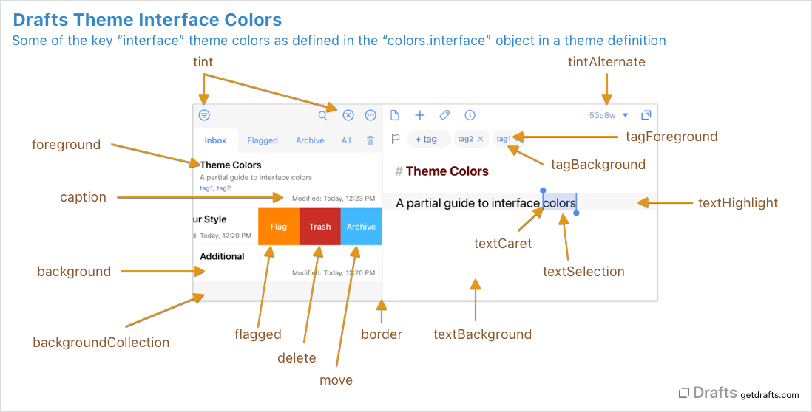
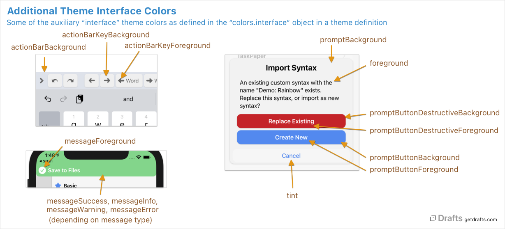

Creating Themes
Table of Contents
- What Do I Need to Know?
- File Format
- Editing Theme Definitions
- Workflow for Editing Themes
- Sample Files
- Root Level Elements
- Scopes
- More about Scopes
- Colors
What Do I Need to Know?
There are no great technical requirements to develop and modify themes for Drafts. Most basic theme development involves copying and modify one of the default themes (sample files below), and assigning colors as hex value strings. Most color picker type applications can provide hex values for colors, as can many online tools.
File Format
Theme definition files are stored in JSON format with UTF-8 encoding. Supported keys as described below. Additional keys will be ignored. When distributed, Drafts exports and imports using the .draftsTheme file extension, but internally these are JSON.
Editing Theme Definitions
Drafts does not have a built-in editor for theme definitions. Development of theme definitions is done in JSON files outside of the app. For details, see developer mode information.
Once a theme definition is complete, it can be imported into Drafts to be used, and, if desired, shared to the Drafts Directory for other users.
Workflow for Editing Themes
Generally speaking, the recommended workflow for developing a custom theme is as below. These steps apply on both iOS and macOS.
- Enable Developer Mode
- In Drafts, choose an existing built-in or custom theme that most closely matches the theme you wish to develop. Select this theme in editor preferences, and export is as a file using the available share options. Save this file in
iCloud Drive/Drafts/Library/Themes(you may have to create this folder). - Open your new syntax file in an external JSON editor, make your modifications, and save the file.
- In Drafts, make your theme active in editor preferences.
- As you iterate and make changes to your theme, save the file, and reload it in Drafts by re-applying the theme in editor preferences to force it to reload from file.
- When you are happy with your theme, import it into Drafts as a custom theme using the “Import” options in editor preferences.
- The imported custom theme can be used in regular production mode.
- Disable Developer Mode.
If you are making modifications to a syntax you have worked on in the past, when you use the “Import” feature, you will be offered the option to replace the version you have imported in the past, or import as a new custom syntax.
Sample Files
Complete example theme definitions:
- style-light.json: Default light theme currently used in Drafts.
- style-dark.json: Default dark theme currently used in Drafts.
Root Level Elements
The root of the JSON file should be a object which defines the following root element keys:
- name [string]: A friendly display name for the theme which is displayed to the user when selecting themes.
- author [string]: Source credit for who created this theme.
- description [string, required]: Description of the theme with more details about what is supported by the definition. May be used in user interface elements to assist user in selecting themes.
- isDark [boolean]: Should this theme be considered dark or light. Primarily used on iOS to determine whether to display the light or dark on-screen keyboard when editing in this theme.
- scopes [object]: Defines scopes which control rendering of text based on scopes returned from a syntax-highlighting definition. See Scopes for details.
- colors [object]: Defines named colors for use in scopes and the user interface. See Colors for details.
Scopes
Entries in the scopes object define font style attributes for a particular scope. The keys for each object should match scopes outputted by syntax definitions. There is a standard set of keys which should be defined to match common styles used in default syntax definitions, but additional keys can be provided to support specific custom scopes generated by a particular syntax definition.
- name [string]: A friendly display name for the scope to help clarify its purpose.
- settings [object]: The font options to apply to text with the scope key. Allowed values:
- fontWeight [string, optional]: Font weight to use, defaults to
regularSupported values:- ultraLight
- thin
- light
- regular
- medium
- semibold
- bold
- heavy
- black
- fontStyle [string, optional]: Comma-separate list of font style traits to apply. Supported values:
- italic
- underline
- strikethrough
- monospace
- fontSize [string, optional]: Apply font size adjustment for this scope. Supported values:
extraSmall, small, normal, large, extraLarge. If omitted,normalwill be assumed. Other options apply a multiplier to adjust the font size larger or smaller than the base font size selected by the user for this scope. - foreground [string, optional]: The foreground text color. String with either a named color defined in the
colors:editorobject of this theme, or a color as a hex value (e.g.#000000). Generally, using named colors is preferred to allow easier maintenance and to avoid repition if color is used in multiple scopes. - background [string, optional]: The background color to use behind text. String with either a named color defined in the
colors:editorobject of this theme, or a color as a hex value (e.g.#000000). Generally, using named colors is preferred to allow easier maintenance and to avoid reptition if color is used in multiple scopes.
- fontWeight [string, optional]: Font weight to use, defaults to
Example
This is an abbreviated example of a scopes object for illustration purposes.
"scopes": {
"text.normal": {
"name": "Normal Text",
"settings": {
"fontStyle": "",
"foreground": "foreground"
}
},
"text.header": {
"name": "Header",
"settings": {
"fontWeight": "bold",
"foreground": "header"
}
},
"text.bold": {
"name": "Bold",
"settings": {
"fontWeight": "bold",
"foreground": "foreground"
}
},
"text.italic": {
"name": "Italic",
"settings": {
"fontStyle": "italic",
"foreground": "foreground"
}
},
...
}
More about Scopes
Themes should implement at least the named scopes present in the example themes which ship with Drafts for compatibility. Themes can define additional scopes as desired. These scope may only be used if a custom syntax definition is also developed that assigns these scope names to text.
Colors
The colors object contains two sub-objects, editor and interface. Each of these objects should contain a series of key-string elements. The keys in these objects define a name for a color, and the string value is a color in hex format (#000000).
Hex format colors are common in HTML/CSS, and there are many tools to select edit and copy hex colors. It is recommend you use a utility to preview and generate these color values.
Editor Colors
The editor object contains named colors for use by the scopes defined in the theme. Think of these colors as variables that let you define a named color which can be used in multple scope definitions. Drafts does not directly use the colors in this object, their use is only a function of where they appear in the scopes of the theme. Although hex values for colors can be directly added in scopes, it is recommended you use named editor colors defined in this object to avoid repeating color values you might want to change later.
Interface Colors
The keys for the interface object are pre-defined and match user interface elements which use those colors in Drafts, particularly on iOS. All keys should be defined for compatibility.
Interface Color Diagrams
How some of the primary interface colors are used:

Additional interface colors:

Interface Color Reference
- Editor Related:
textForeground: Primary text display color in editor. This color is only used in previews of the theme, and should be set to the default foreground color that text in the editor will be displayed. Since scopes interact with named editor colors, it’s not possible to guess the best example text color, so it should be set using this key.textBackground: The background color behind the editor text.textSelection: Highlight color used to show selected text ranges.textHighlight: The background color to use to show the current line if the “Highlight insertion point” setting is active.textCaret: Color of the insertion point caret.
- General User Interface (iOS only):
foreground: Color of textcaption: Secondary text color for caption elements, such as the modification date in the draft list.background: Background color for interace elementsbackgroundCollection: Alternate background color used for collection type views.border: Border color used between some elements, such as the sidebar panes.tint: Tint color for buttons and other tappable elements.tintAlternate: Alternate tint color used for some elements, such as the character and word count in the editor.flagged: Background color for swipe actions related to flaggingmove: Background color for swipe actions related to moving elements.delete: Background color for swipe actions that are destructive.tagForeground: Foreground text color for tags.tagBackground: Background text color tor tags.tagAddHighlight: Animation highlight color when adding tags.tagRemoveHighlight: Animation highlight color when removing tags.
- Prompts: Used in dialogs used by the Drafts, and also created via actions.
promptBackgroundpromptButtonBackgroundpromptButtonForegroundpromptButtonDestructiveBackgroundpromptButtonDestructiveForeground
- Action Bar: Controls appearance of the action bar above the keyboard on iOS.
actionBarBackgroundactionBarKeyBackgroundactionBarKeyForeground
- Message Banners: Used to control the background and foreground colors of message banners displayed in Drafts. These include the banners displayed for the completion of actions, etc.
messageForeground: Text color for message banners.messageSuccess: Background color for success message banners.messageInfo: Background color for informative message banners.messageWarning: Background color for warning message banners.messageError: Background color for error message banners.
- Tint Colors: Used as the accent colors assignable to actions and workspaces in Drafts. Generally recommended you provide colors matching the named tints, but different theme might have more or less saturated or slight different hues as appropriate.
tintGraytintRedtintPinktintOrangetintYellowtintGreentintIndigotintBluetintViolet
- Widgets: Used by iOS 14/macOS 11 Widgets.
widgetBackgroundwidgetBackgroundAlternatewidgetForegroundwidgetForegroundAlternate
Example
This is an abbreviated example of a colors object for illustration purposes.
"colors": {
"editor": {
"foreground": "#000000",
"background": "#FFFFFF",
...
},
"interface": {
"tint": "#538AEF",
"tintAlternate": "#7892C4",
...
}
}